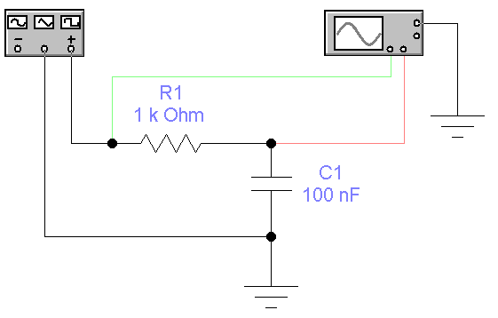
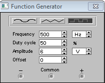
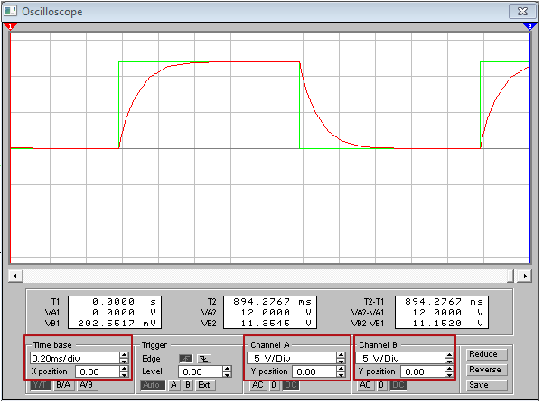
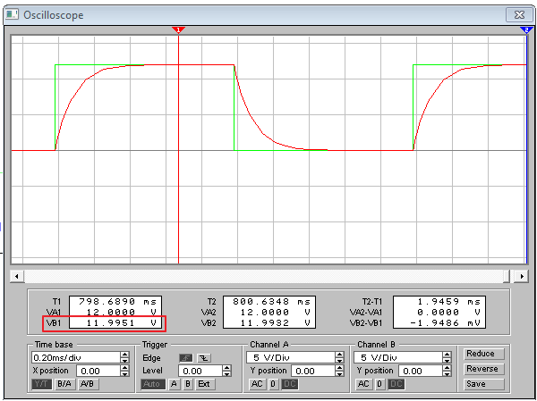
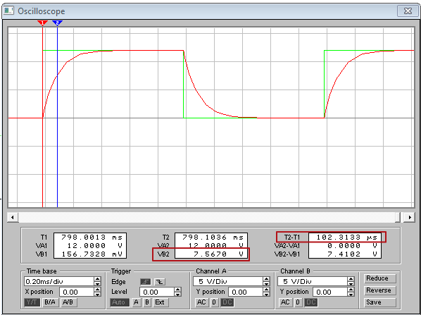

Electronics Workbench
Исследование интегрирующей RC-цепи
в программе
Electronics Workbench
Изучить принципы работы интегрирующей RC-цепи можно здесь.
- Запустите программу Electronics Workbench.
- Соберите модель схемы интегрирующей RC–цепи: (рис. 1).

Рис. 1 - Модель схемы интегрирующей RC–цепи
- Установите свойства элементов схемы (табл. 1).
Для установки свойств:- сделайте двойной щелчок на элементе;
- откройте вкладку (Label, Value или Models);
- установите значения.
Таблица 1
Свойства элементов схемы Обозначение
элементаВкладка Label
(Свойство:Значение)Вкладка Value
(Свойство:Значение)C1 Label: C1 Capacitance (C): 100 nF R1 Label: R1 Resistance (R): 1 kΩ - Закрасьте провод идущий к каналу А осциллографа в зеленый цвет: сделайте двойной щелчок на проводе и выберите зеленый цвет. На экране осциллографа осциллограмма входного сигнала будет окрашен в зеленый цвет.
- Закрасьте провод идущий к каналу B осциллографа в красный цвет. Осциллограмма выходного сигнала будет окрашен в красный цвет.
- Установите параметры функционального генератора:
- вид сигнала - прямоугольные импульсы;
- частота - 500 Гц (Frequency - 500 Hz);
- амплитуда - 6 В (Amplitude - 6 V);
- коэффициент заполнения - 50% (Duty cycle - 50%) ;
- смещение - 0 В (Offset - 0 V).

Рис. 2 - Настройка функционального генератора
- Сделайте двойной щелчок на осциллографе, чтобы открыть расширенную модель осциллографа.
- Щелкните мышкой на кнопке
 в верхнем правом углу, чтобы включить схему. Через 10-12 секунд повторно щелкните мышкой на кнопке , чтобы выключить схему.
в верхнем правом углу, чтобы включить схему. Через 10-12 секунд повторно щелкните мышкой на кнопке , чтобы выключить схему. - Подберите шаг развертки (Time base) и чувствительности каналов (Channel A/Channel B) для получения полного изображения одного периода сигналов (рис. 3).

Рис. 3 - Настройка шага развертки и чувствительности каналов
- Зарисуйте осциллограммы (снимите скриншот) на каналах А и В.
- Определите амплитуды выходного сигнала Um:
- подведите красный маркер к наивысшей точке красной осциллограммы;
- значение в поле VB1 покажет амплитуды выходного сигнала (рис. 4).

Рис. 4 - Определение амплитуды выходного сигнала
- Вычислите уровень напряжения соответствующее изменению выходного напряжения до 63% от максимального Uτ по формуле:
Uτ=0,63·Um
Пример: На рис. 4 амплитуда сигнала 12 В. Следовательно Uτ = 0,63·Um = 0,63·12 = 7,56 [В].
- Определите экспериментальное значение постоянной времени цепи τ:
- подведите красный маркер к точке, где начинается подъем красной осциллограммы (начало фронта импульса);
- подведите синий маркер к точке на красной осциллограмме, в которой напряжение приблизительно равно Uτ . Значение напряжения контролируется по значению в поле VB2;
- значение в поле T2-T1 покажет экспериментальное значение постоянной времени цепи τ (рис. 5).

Рис. 5 - Определение экспериментального значения постоянной времени цепи
(τ=102,313 мкс≈0,1мс)
- Вычислите теоретическое значение постоянной времени цепи τ по формуле:
τ=R·C
Пример: Для С1=100 нФ и R1=1 кОм
τ = 1000·0,0000001 = 0,0001 [c] = 0,1 [мс] = 100[мкс] .
- Результаты запишите в рабочей тетради (табл. 2).
- Установите сопротивление резистора R1=2 кОм и выполните пункты 9-15.
- Установите сопротивление резистора R1=4 кОм и выполните пункты 9-15.
- Проанализируйте полученные результаты.
Таблица 2
| № измерения | 1 | 2 | 3 |
|---|---|---|---|
| Ёмкость конденсатора С1, нФ | 100 | 100 | 100 |
| Сопротивление резистора R1, кОм | 1 | 2 | 4 | Амплитуда выходного сигнала Um, В |
| Напряжения соответствующее изменению выходного напряжения на 63% от максимального Uτ, В |
|||
| Теоретическое значение постоянной времени цепи τтеор, мс | |||
| Экспериментальное значение постоянной времени цепи τэксп, мс |